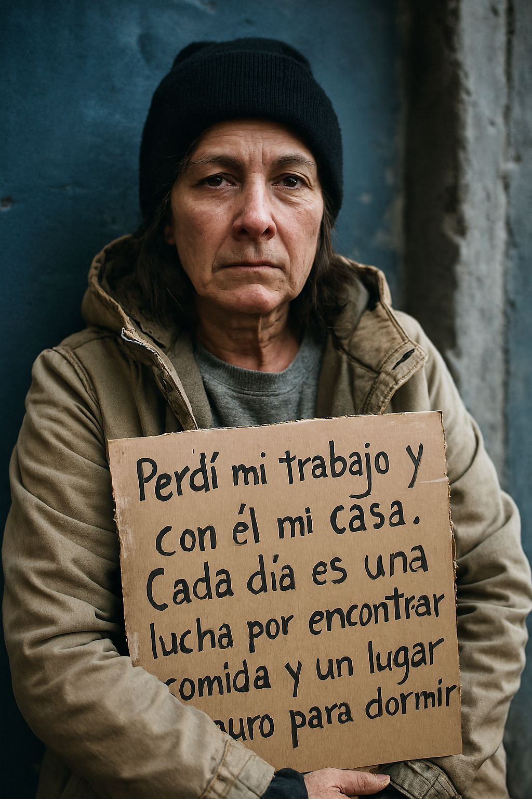
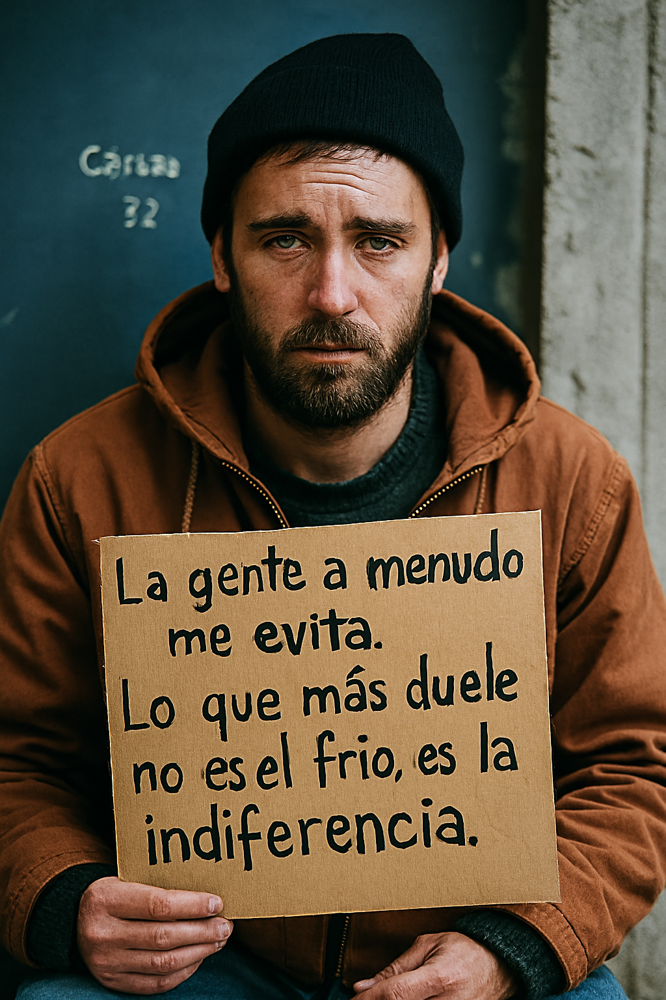

| Inicio | Estadísticas | Testimonios | Deja tu reflexión |
MaríaEdad: 47 “Perdí mi trabajo y con él mi casa. Cada día es una lucha por encontrar comida y un lugar seguro para
dormir.” |
 |
CarlosEdad: 32 “La gente a menudo me evita. Lo que más duele no es el frío, es la indiferencia.” |
 |
“Cuando nos organizamos como vecinos y voluntarios, vimos que pequeñas acciones salvan días enteros.”